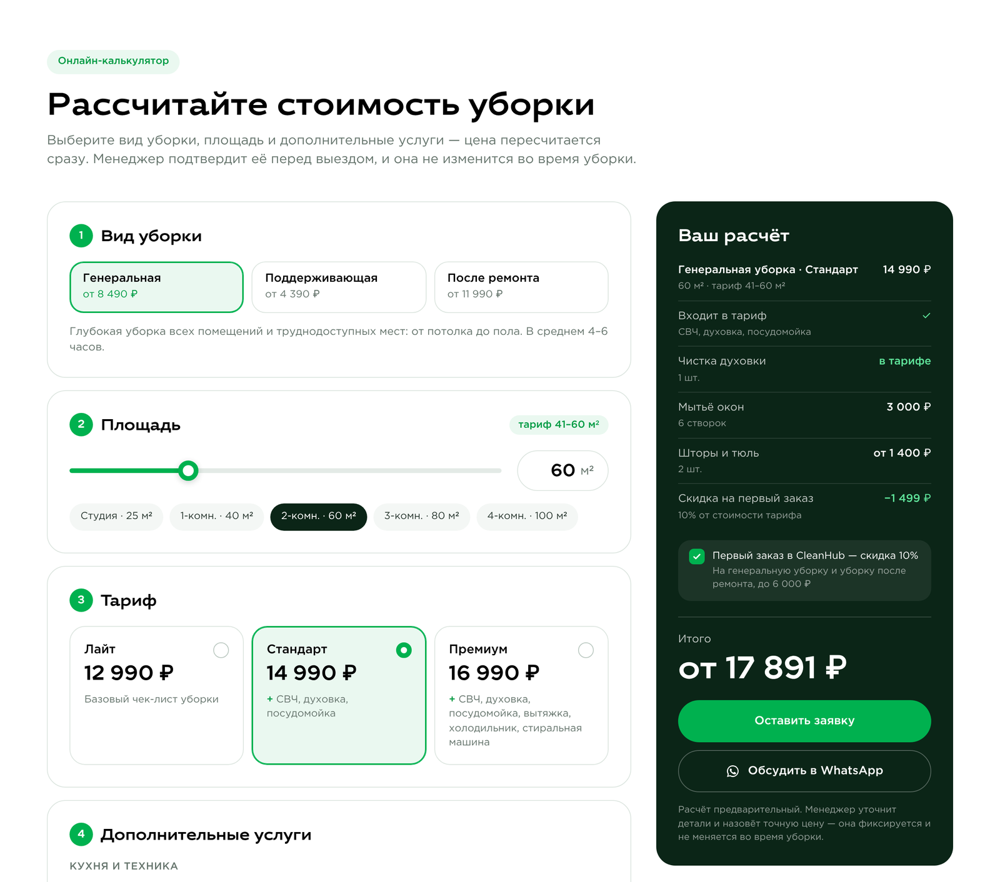
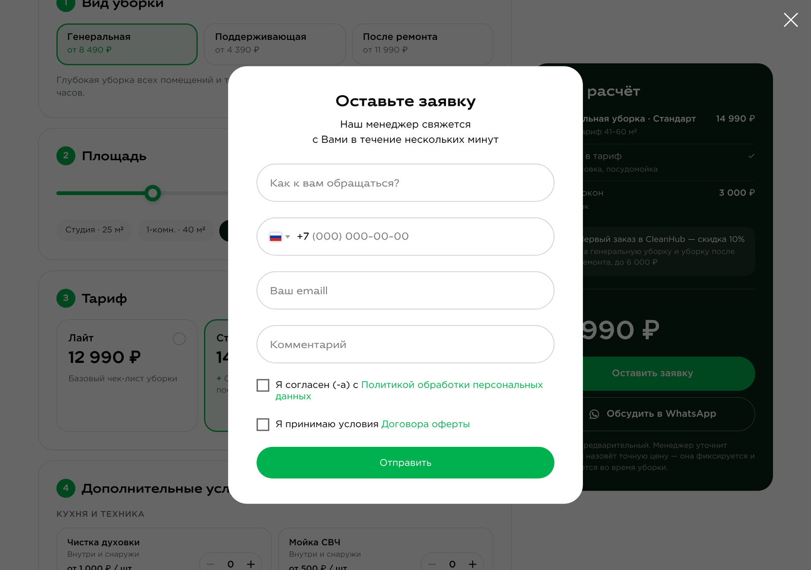

Пошаговая инструкция: как добавить калькулятор на страницу, связать его с формой заявки, проверить работу и поменять цены.
cleanhub-calculator.html передаётся вместе с этой инструкцией.Калькулятор написан на HTML, CSS и JavaScript и вставляется целиком в один блок «HTML-код» (T123). Внешние библиотеки не нужны. Шрифты и цвета берутся с сайта. Цены тарифов, абонементов и доп. услуг уже заложены в код.
calc формы.Кнопка «Обсудить в WhatsApp» открывает чат, где текст расчёта уже набран. Если форму на странице не найти, кнопка «Оставить заявку» тоже открывает WhatsApp, чтобы заявка не потерялась.

Проще всего дублировать существующую форму «Оставьте заявку». Тогда сохранятся оформление и подключённые сервисы приёма заявок (почта, Telegram, CRM).
/price)./price это, например, форма
кнопки «Выбрать тариф» со ссылкой #popup:myform6.#popup:myform6).
Впишите #popup:calc.calc
(строчными латинскими буквами).#popup:myform6, по кнопкам
«Выбрать тариф» откроются сразу две формы.calc_total (итог), calc_service (вид уборки),
calc_tariff (тариф), calc_area (площадь, м²), calc_extras (доп. услуги).Без копии. Можно добавить скрытое поле calc в уже существующую форму
и указать её ссылку в настройке popupHook (раздел «Настройки» ниже).

cleanhub-calculator.html в текстовом редакторе.
Ctrl+A / ⌘A) и скопируйте его. Код начинается с <!--
и заканчивается на </script>.Откройте опубликованную страницу на компьютере и на телефоне:
calc с расчётом (пример ниже).Пример поля calc в заявке:
Уборка: Генеральная уборка; Площадь: 60 м²; Тариф: Стандарт (41–60 м²) — 14 990 ₽, включает: СВЧ, духовка, посудомойка; Доп. услуги: Мытьё окон — 6 створок: 3 000 ₽; Химчистка мебели: по фото; Итого: 17 990 ₽
Калькулятор отправляет события в счётчик 108429981. Чтобы они появились в отчётах, создайте цели: Метрика → «Цели» → «Добавить цель» → тип «JavaScript-событие».
| Идентификатор цели | Когда срабатывает |
|---|---|
calc_start | Первое действие посетителя в калькуляторе |
calc_lead | Нажатие «Оставить заявку» |
calc_whatsapp | Нажатие «Обсудить в WhatsApp» |
Все настройки собраны в начале скрипта, в блоке CONFIG. После любой правки заново вставьте код
в блок T123 и опубликуйте страницу.
| Параметр | Что делает | Сейчас |
|---|---|---|
popupHook | Ссылка попап-формы, которую открывает кнопка «Оставить заявку» | #popup:calc |
fields | Имена скрытых полей формы | calc, calc_total и др. |
whatsapp | Номер для кнопки WhatsApp, без «+». Пустые кавычки '' скрывают кнопку | 79152606655* |
metrikaId | Счётчик Метрики. 0 — не отправлять цели | 108429981 |
firstOrder | Галочка «Первый заказ — скидка»: процент, максимум, виды уборки. null убирает галочку | 10%, до 6 000 ₽, генеральная и после ремонта |
stickyTop | Отступ блока итога от верха экрана при прокрутке, px (чтобы не заезжал под шапку) | 100 |
defaults | Что выбрано при открытии страницы | генеральная, 60 м², «Стандарт» |
title, subtitle | Заголовок и подзаголовок калькулятора | «Рассчитайте стоимость уборки» |
* Номер взят со ссылки WhatsApp на сайте (wa.me/89152606655) и переведён в международный формат. Уточните его у заказчика.
| Файл | Зачем |
|---|---|
cleanhub-calculator.html | Код калькулятора для блока T123. Это единственный файл, который нужен для установки. |
demo.html | Предпросмотр без Тильды (по желанию): откройте в браузере, чтобы посмотреть калькулятор и проверить, что попадает в заявку. |
Цены записаны в коде сразу после блока CONFIG:
| Блок | Что внутри |
|---|---|
SERVICES | Тарифы трёх видов уборки: границы площади, цены, цена за м² свыше 120 м², что входит в тариф |
SUBSCRIPTION | Абонемент на поддерживающую уборку: скидка с каждой уборки за 3, 6 и 12 месяцев |
EXTRAS | Доп. услуги: название, описание, цена, пометка «от» (from: true), максимальное количество |
Пример: генеральная уборка. Каждое число в строке тарифа — цена для своей границы площади из tiers,
по порядку:
tiers: [40, 60, 80, 100, 120], // до 40 м², 41–60, 61–80, 81–100, 101–120
prices: {
lite: [8490, 12990, 17490, 21990, 26490],
standard: [10490, 14990, 19490, 23990, 28490], // ← «Стандарт»
premium: [12490, 16990, 21490, 25990, 30490]
},
perM2: 250, // свыше 120 м²: 250 ₽ за м²
14990, а не 14 990.EXTRAS, например { id: 'windows', … price: 500, … }.| Что видно | Причина и решение |
|---|---|
| Калькулятора нет на странице | Страница не опубликована, или код вставлен не целиком. Вставьте весь файл заново, от первой до последней строки. |
| «Оставить заявку» открывает WhatsApp | На этой странице нет попапа со ссылкой #popup:calc. Проверьте шаг 1: ссылку и то, что форма на той же странице. |
| Форма открывается, но расчёта в заявке нет | В форме нет скрытого поля calc, или имя набрано иначе (регистр важен, нужны латинские буквы). |
| Открываются сразу две формы | У копии формы осталась старая ссылка. Задайте ей #popup:calc. |
| Блок итога заезжает под шапку при прокрутке | Увеличьте stickyTop в настройках, например до 130. |